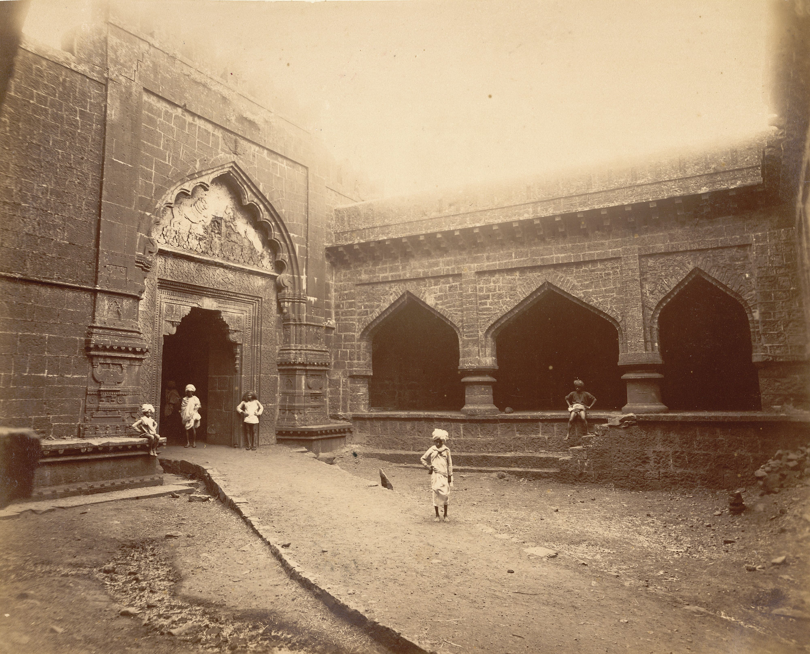
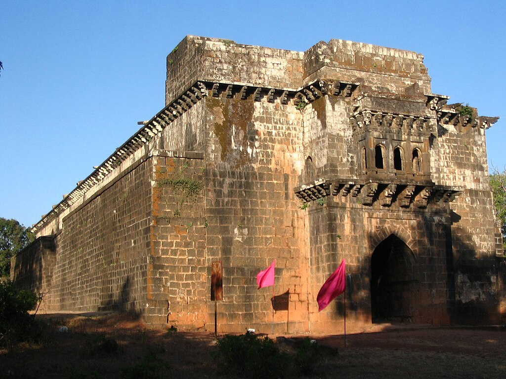

Panhala Fort
.jpeg)
Panhala fort (also known as Panhalgad and Panhalla (literally "the home of serpents")), is located in Panhala, 20 kilometres northwest of Kolhapur in Maharashtra, India. It is strategically located looking over a pass in the Sahyadri mountain range which was a major trade route from Bijapur in the interior of Maharashtra to the coastal areas. Due to its strategic location, it was the centre of several skirmishes in the Deccan involving the Marathas, the Mughals and the British the grand son's of chhatrapati shivaji maharaj East India Company, the most notable being the Battle of Pavan Khind. Here, the queen regent of Kolhapur, Tarabai Ranisaheb, spent her formative years. Several parts of the fort and the structures within are still intact. It is also called as the 'Fort of Snakes' as it is zigzagged in shape.
History
Panahala fort was built between 1178 and 1209 CE, one of 15 forts (others including Bavda, Bhudargad, Satara, and Vishalgad) built by the Shilahara ruler Bhoja II. It is said that aphorism Kahaan Raja Bhoj, kahan Gangu Teli is associated with this fort. A copper plate found in Satara shows that Raja Bhoja held court at Panhala from 1191–1192 CE. About 1209–10, Bhoja Raja was defeated by Singhana (1209–1247), the most powerful of the Devgiri Yadavas, and the fort subsequently passed into the hands of the Yadavas. Apparently it was not well looked after and it passed through several local chiefs. In 1376 inscriptions record the settlement of Nabhapur to the south-east of the fort. It was an outpost of the Bahamanis of Bidar. Mahmud Gawan, an influential prime minister, encamped here during the rainy season of 1469. On the establishment of the Adil Shahi dynasty of Bijapur in 1489, Panhala came under Bijapur and was fortified extensively. They built the strong ramparts and gateways of the fort which, according to tradition, took a hundred years to build. Numerous inscriptions in the fort refer to the reign of Ibrahim Adil Shah, probably Ibrahim I (1534–1557).

Teen Darwaja
The Teen Darwaza was one of the three double gateways of the fort - the others being the Char Darwaja and Wagh Darwaja. The Char Darwaza was destroyed when during the British siege. The Teen Darwaja gate which is the main entrance to the fort is located north of the Andhar Bavai[19] on the West side of the fort. It is a double gate with a court in between that has arcades. The outer gate has an ornate chamber on top with decorated eaves. The inner gate from the court is highly decorated with the lintel having finely carved motifs, including one of Ganesh. The latter has been placed by the Marathas during their occupation of the fort. There are three Persian inscriptions—one on top and one each on either side. All three declare that the gate "was built in the reign of Ibrahim Adil Shah I by Malik Daud Aki son of Minister Ahmed" in 954 AH (1534 CE).

Ambarkhana
The Amberkhana, situated in the center of the fort, were three granaries built in the Bijapuri style of architecture. They enabled Shivaji to withstand a 5-month siege by Siddhi Johar. It consists of three buildings called the Ganga, Yamuna and Saraswati Kothis. The Ganga kothi, which was the largest, had a capacity of 25,000 khandis (with one khandi being 650 lbs). It covers an area of 950 sq m and is 10.5 m high. Rice, nachni and warai were the major provisions stored. Stairs on both sides lead the top of the buildings. It has sixteen bays each with its own flat vault with a hole on top through which grain used to be passed. The eastern entrance has a domed chamber with a balcony and plasterwork of the Bijapuri style